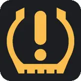
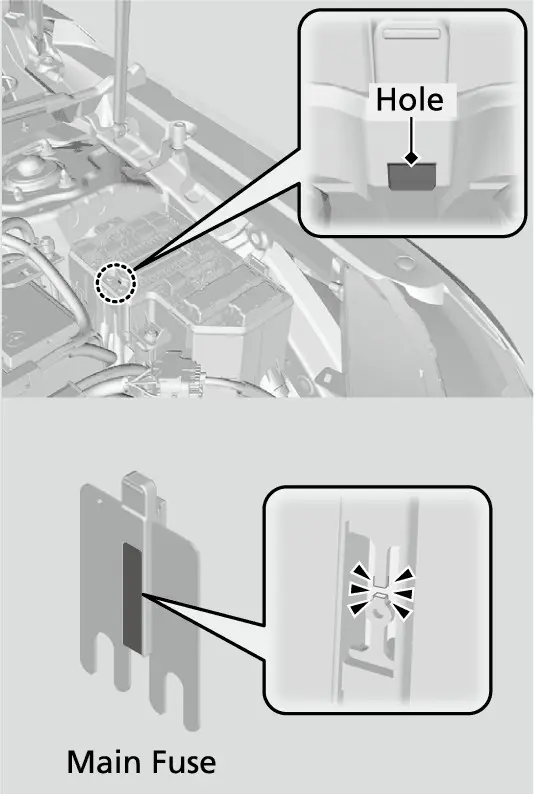
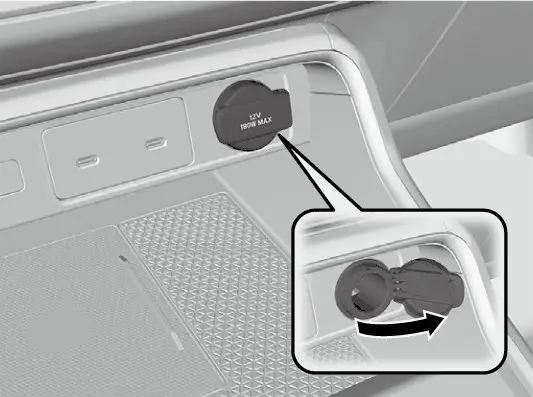
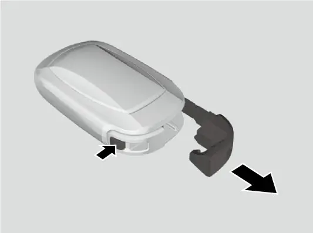
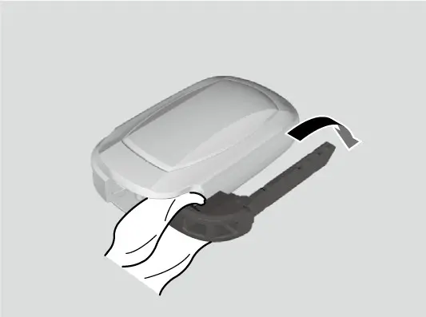
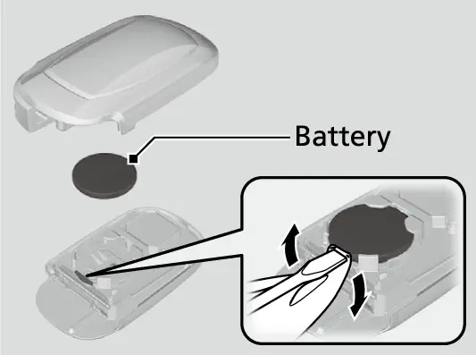

קאפיטל 20
באטעריע און עלעקטרישע סיסטעם
זייטן 322–332 אינעם PDF
בענזין EX אדער היבריד: וועלכע עלעקטרישע סיסטעם איר האט
די CR-V ווערט פארקויפט אין צוויי גאר אנדערע ווערסיעס. לויט Honda'ס feature guide (די אויסשטאטונג-ביכל(האבן די היבריד טרימס)Sport Hybrid, TrailSport Hybrid, Sport-L Hybrid און Sport Touring Hybrid) א 2.0 ליטער Atkinson-cycle מאטאר צוזאמען מיט אן עלעקטרישן דרייוו מאטאר, א motor/generator און א lithium-ion באטעריע פעק. אייער EX האט גארנישט פון דעם. Honda'ס אפיציעלע ספעציפיקאציעס ווייזן די EX מיטן 1.5 ליטער טורבא פיר-צילינדער מאטאר מיט CVT, און ווייזן נישט פאר איר קיין צוויי-מאטאר היבריד סיסטעם. אייער קאר האט נישט קיין הויך-וואלט באטעריע, נישט קיין עלעקטרישן דרייוו מאטאר, און מען דארף נישט טראכטן פון קיין היבריד טשארדזשן.
די 12-וואלט באטעריע
וואו זי ליגט און ווי מען היט זי
אייער EX ארבעט מיט איין געווענליכע 12-וואלט באטעריע אונטער דער האוד. דער פיוז קעסטל פונעם מאטאר-אפטייל זיצט גלייך דערנעבן. לויטן אונער'ס מאנואל, היט א סענסאר אויפן נעגאטיוון טערמינאל פון דער באטעריע דעם צושטאנד פון דער באטעריע. אויב יענער סענסאר האט א פראבלעם, ווייזט דער driver information interface (דער אינפארמאציע-דיספליי פארן דרייווער) א ווארענונג מעלדונג. אויף אייער EX איז דאס דער 7-אינטש TFT מעטער (וואס דער מאנואל רופט "A-type meter"). אויב די מעלדונג קומט ארויף, זאגט Honda מען זאל לאזן איבערקוקן דעם קאר ביים דילער. די באטעריע זייטן פונעם מאנואל באשרייבן נישט קיין באזונדערן ליכטל פאר דער טשארדזשינג סיסטעם. די פולע ליסטע פון מעטער אינדיקאטארן געפינט איר אין קאפיטל 6.
זיכערהייט פריער
דער חודש'דיגער טשעק פון די טערמינאלן
אייער אייגענע ארבעט איז קורץ. דער מאנואל זאגט מען זאל יעדן חודש טשעקן די באטעריע טערמינאלן פאר קאראזיע (זשאווער). קאראזיע זעט אויס ווי א פודער-ארטיגע שיכט אויף די קלעמערלעך. דער גאנצער טשעק נעמט בערך צוויי מינוט. קוקן איז זיכער. פאר עפעס מער ווי קוקן, פאלגט די ווארענונגען אויבן.
ריינמאכן פארזשאווערטע טערמינאלן (דער מאנואל'ס מעטאד)
- שמירט א מישונג פון baking powder און וואסער אויף די פארזשאווערטע טערמינאלן.
- ווישט אפ די טערמינאלן מיט א נאסן האנטעך.
- טרוקנט אפ די באטעריע מיט א שמאטע אדער האנטעך.
- שמירט די טערמינאלן מיט גריס (שמיר-פעט) כדי צו העלפן פארמיידן קאראזיע אין דער צוקונפט.
טוישן די באטעריע: ניצט דעם ספעציפיצירטן טיפ
ווען די באטעריע ווערט אויסגעארבעט, זאגט דער מאנואל אז די נייע באטעריע מוז זיין די זעלבע ספעציפיקאציע. די ארגינעלע באטעריע איז ספעציעל געמאכט פאר א קאר מיט Auto Idle Stop (אויטאמאטיש אפשטעלן דעם מאטאר ביים שטיין(. Honda'ס ספעציפיקאציע טאבעלע ווייזט Idle-Stop אויף די בענזין טרימס)LX, EX און EX-L) און נישט אויף די היברידן. א באטעריע פון אן אנדערן טיפ קען פארקירצן די לעבן פון דער באטעריע און קען שטערן Auto Idle Stop פון ארבעטן. דער מאנואל דרוקט נישט קיין פארט נומער, דעריבער פרעגט ביים דילער פאר דעם ספעציפיצירטן טיפ און גרייס. אויב א שאפ שלאגט פאר א ביליגערע געווענליכע באטעריע, פרעגט צי זי שטימט מיט יענער ספעציפיקאציע.


נאכדעם וואס די באטעריע איז אפגעשלאסן אדער ליידיג געווארן
עטליכע זאכן זענען נארמאל נאכדעם וואס די באטעריע איז געווען אפגעשלאסן אדער אינגאנצן ליידיג. די אודיא סיסטעם ווערט אפגעשטעלט; זעט דעם אפטייל וועגן אודיא סיסטעם שוץ קעגן גנבה אינעם מאנואל (קאפיטל 7). ביי קאנאדישע מאדעלן לייגט דער מאנואל צו אז מען דארף ריסעטן די immobilizer סיסטעם (די שוץ קעגן אנצינדן אן א ריכטיגן שליסל). ווען איר שטעלט דעם power mode אויף ON נאכן צוריק פארבינדן, קענען זיך אנצינדן עטליכע געלע אינדיקאטארן, צוזאמען מיט א מעלדונג אויפן מעטער:
- Vehicle Stability Assist (VSA) (די סטאביליטעט הילף).
- ברעמז סיסטעם (געל).
- Adaptive Cruise Control (ACC) with Low Speed Follow (די אדאפטיווע קרוז קאנטראל).
- Low tire pressure/TPMS (נידעריגער רייף-דרוק / דער רייף-דרוק סיסטעם).
- Safety support (זיכערהייט הילף).




כדי זיי אויסצולעשן, פארט א קורצע שטרעקע מיט מער ווי 12 mph (20 km/h). יעדער אינדיקאטאר דארף זיך אויסלעשן. אויב איינער בלייבט אן, לאזט דעם קאר טשעקן ביים דילער.
כללים פאר טשארדזשן און דזשאמפ-סטארטן
כדי צו טשארדזשן די באטעריע מיט א באטעריע טשארדזשער, שליסט פריער אפ ביידע באטעריע קאבלען, כדי נישט צו שעדיגן די עלעקטרישע סיסטעם פונעם קאר. שליסט שטענדיג אפ דעם נעגאטיוון (–) קאבל ערשט, און פארבינדט אים צוריק לעצט. אויפן טשארדזשער, קלויבט א טשארדזשינג וואלטאזש נידעריגער פון 15 וואלט, און קוקט אינעם טשארדזשער'ס מאנואל פאר דער ריכטיגער איינשטעלונג.
פאר א דזשאמפ סטארט, ניצט נאר א 12-וואלט booster באטעריע (הילפס-באטעריע). פארבינדט דעם צווייטן דזשאמפער קאבל צום מאטאר מאונטינג באלט וואס ווערט געוויזן אויפן בילד אינעם מאנואל, נישט צו קיין אנדער טייל. אויב דער מאטאר דרייט זיך לאנגזאם, טשעקט אז די קאבל-קלעמערס האבן גוטן מעטאל-צו-מעטאל קאנטאקט. באפעסטיגט די קלעמערס פעסט אז דאס ציטערן פונעם מאטאר זאל זיי נישט אפשאקלען, און לאזט קיינמאל נישט די עקן פון די קאבלען זיך אנרירן איינס אינעם אנדערן. די באטעריע ארבעט שוואכער אין קאלטן וועטער, און דאס אליין קען זיין גענוג אז דער מאטאר זאל נישט אנהייבן. דער פולער סדר פון דזשאמפ-סטארטן און אראפנעמען די קאבלען איז אין קאפיטל 18.
פיוזן
ווי פיוזן ארבעטן און וואו זיי זענען
א פיוז איז א בכוונה שוואכע שטעל. אויב א קרייז (circuit) ציט צופיל שטראם, ברענט דער פיוז אויס איידער די דראטן ווערן געשעדיגט. דער כלל פונעם מאנואל: אויב סיי וועלכע עלעקטרישע מכשיר הערט אויף צו ארבעטן, שטעלט דעם power mode אויף VEHICLE OFF און טשעקט צי דער צוגעהעריגער פיוז איז אויסגעברענט.
אייער CR-V האט דריי פיוז קעסטלעך. יעדעס האט א נומערירטע דיאגראם און א טשארט אינעם מאנואל.
וואו די פיוז קעסטלעך ליגן
| פיוז קעסטל | ארט | נומערירונג |
|---|---|---|
| מאטאר-אפטייל | נעבן דער באטעריע; דריקט די טאבס צו עפענען | 1 ביז 42 |
| פיוז קעסטל | ארט | נומערירונג |
|---|---|---|
| אינעווייניג הויפט | אונטערן דעשבארד | 1 ביז 56 |
| אינעווייניג סאב (נעבן-קעסטל) | אונטערן דעשבארד | A ביז H |
דער פיוז קעסטל אינעם מאטאר-אפטייל
דער קעסטל האלט די גרויסע פיוזן און א גרויסן טייל פון דער דרויסנדיגער אויסשטאטונג. געוויסע ערטער זענען ליידיג, און געוויסע זענען באצייכנט "not available on all models" (נישט אויף אלע מאדעלן). די ראטינגס וואס שטייען אין קלאמערן אינעם מאנואל'ס טשארט ווערן נישט ערקלערט אין די זייטן.
אויסגעקליבענע פיוזן אינעם מאטאר-אפטייל
| נומ. | קרייז | ראטינג |
|---|---|---|
| 1 | MAIN FUSE (הויפט פיוז) | 150 A |
| 3 | RR DEF (הינטערשטער defroster) | 30 A |
| 5 | WIPER (ווייפערס) | 30 A |
| 5 | EPS (פאואר סטירינג) | 70 A |
| 18 | HORN (הארָן) | 15 A |
| 19 | FR WASHER (פארנטיגער וואשער) | 15 A |
| 22 | DBW | 15 A |
| 23 | HAZARD (האזארד לייטס) | 10 A |
| 28 | INJ (אינדזשעקטארס) | 20 A |
| 29 | STOP (ברעמז לייטס) | 10 A |
די אינעווייניגע הויפט און סאב פיוז קעסטלעך
דער אינעווייניגער הויפט קעסטל באדינט דעם אינעווייניג פונעם קאר. דאס זענען די פיוזן וואס איר וועט מערסטנס דארפן.
אויסגעקליבענע פיוזן אינעם אינעווייניגן הויפט קעסטל
| נומ. | קרייז | ראטינג |
|---|---|---|
| 1 ביז 4 | עלעקטרישע פענסטער (DR, AS, RR R, RR L) | 20 A יעדער |
| 9 | FR ACC SOCKET (פארנטיגער 12-וואלט סאקעט) | 20 A |
| 10 | DOOR LOCK (טיר לאקס) | 20 A |
| 11 | METER (מעטער) | 10 A |
| 20 | USB CHG (נישט אויף אלע מאדעלן) | 10 A |
| 21 | CARGO ACC SOCKET (סאקעט אינעם לאסט-פלאץ) | 20 A |
| 22 | SMART | 10 A |
| 29 | FUEL PUMP (בענזין פאמפ) | 20 A |
| 32 | SUN ROOF (נישט אויף אלע מאדעלן) | 20 A |
| נומ. | קרייז | ראטינג |
|---|---|---|
| 33 | USB CHG PD | 10 A |
| 44 | DRL (טאג-לייכטן) | 5 A |
דער סאב פיוז קעסטל ניצט די אותיות A ביז H. ער ווייזט ACC (A), EOP (B), METER (D) און OPTION (E). די ערטער C, F, G און H זענען ליידיג.
איבערקוקן און טוישן פיוזן
איבערקוקן פיוזן (לויטן מאנואל'ס סדר)
- שטעלט דעם power mode אויף VEHICLE OFF, און לעשט אויס די לייכטן און אלע צובאהער.
- נעמט אראפ דעם דעקל פונעם פיוז קעסטל.
- טשעקט דעם הויפט פיוז אינעם מאטאר-אפטייל קעסטל דורך קוקן דורכן לאך. אויב ער איז אויסגעברענט, לאזט אים טוישן ביים דילער.
- טשעקט די צוזאמענגעשטעלטע פיוזן (combined fuses) אין דעם זעלבן קעסטל דורך קוקן אינעם שפאלט צווישן זיי. אויב איינער איז אויסגעברענט, לאזט אים טוישן ביים דילער.
- קוקט איבער די קליינע פיוזן אינעם מאטאר-אפטייל און אינעווייניג אינעם קאר. נעמט ארויס א פיוז וואס איר זענט חושד מיטן fuse puller (פיוז-ציער).
- אויב א קליינער פיוז איז אויסגעברענט, טוישט אים מיט א נייעם פיוז פון דער זעלבער ספעציפיצירטער אמפעראזש, באשטעטיגט לויטן טשארט און דעם פיוז לעיבל.

דער fuse puller (פיוז-ציער) איז צוגעקלעמט אויף די הינטערשטע זייט פונעם דעקל פונעם פיוז קעסטל אינעם מאטאר-אפטייל.
עלעקטרישע סאקעטס און טשארדזשינג פארטס
12-וואלט סאקעטס
אייער EX האט צוויי 12-וואלט accessory power sockets (סאקעטס פאר צובאהער), יעדער הינטער א דעקל: איינער אין דער קאנסאל פאנעל און איינער אינעם לאסט-פלאץ. זיי ארבעטן ווען דער power mode איז אויף ACCESSORY אדער ON. זיי זענען געמאכט פאר 12-וואלט DC צובאהער פון 180 וואט (15 אמפער) אדער ווייניגער, דעריבער טשעקט דעם ראטינג פון יעדן מכשיר איידער איר שטעקט אים אריין. האלט דעם דעקל פארמאכט ווען א סאקעט ווערט נישט גענוצט, כדי קליינע זאכן זאלן נישט אריינפאלן. כדי נישט אויסצוליידיגן די באטעריע, ניצט די סאקעטס נאר ווען דער מאטאר לויפט.

פארנטיגע USB-C פארטס
עס זענען דא צוויי USB-C פארטס פארנט. Honda'ס ספעציפיקאציעס רופן איינעם פון זיי דעם smartphone/audio interface (דער פארט פאר טעלעפאן און אודיא). ער טשארדזשט מכשירים, שפילט אודיא פיילס, און פארבינדט פאסיגע טעלעפאנען מיט Apple CarPlay אדער Android Auto. פאלגט די כללים פאר דעם פארט:
- ניצט קאבלען וואס זענען באשטעטיגט דורך USB-IF אז זיי שטימען מיטן USB 2.0 סטאנדארט.
- פארבינדט נישט דורך א hub.
- שטעקט נישט אריין א קארד רידער אדער א hard disk drive; דער מכשיר אדער אייערע פיילס קענען ווערן געשעדיגט.
- מאכט א באקאפ פון אייערע דאטא איידער איר ניצט א מכשיר אינעם קאר.
- לאזט נישט איבער א fal sh drive אינעם קאר, וואו די זון און היץ קענען אים שעדיגן.
געוויסע מכשירים קענען נישט ארבעטן אפילו ווען זיי זענען פארבונדן. פערן אייער Pixel 9a ווערט באשריבן אין קאפיטל 8.
דער צווייטער פארנטיגער פארט איז נאר פאר טשארדזשן. ער שפילט נישט קיין מוזיק, אפילו אויב איר פארבינדט א מוזיק פלעיער. ביידע פארנטיגע פארטס שטיצן USB Power Delivery און PPS (programmable power)supply, פון 5.0 ביז 21 וואלט, מיט א מאקסימום פון 60 וואט.
פארנטיגער USB Power Delivery אויסגאנג
| וואלטאזש | איין פארט אין באנוץ | ביידע פארטס אין באנוץ |
|---|---|---|
| 5 V | 3 A (15 W) | 3 A (15 W) |
| 9 V | 3 A (27 W) | 3 A (27 W) |
| 15 V | 3 A (45 W) | נישט אנגעגעבן |
| 20 V | 3 A (60 W) | 2.25 A (45 W) |
| סך הכל | 60 W | מאקס 60 W צוזאמען |
הינטערשטע USB-C פארטס
פאר'ן הינטערשטן זיץ האט אייער EX צוויי USB-C טשארדזשינג פארטס אויף די הינטערשטע זייט פונעם קאנסאל קעסטל. Honda גיט זיי א ראטינג פון 3.0 אמפער, אבער א פארט גיט די פולע 3.0 אמפער נאר ווען דער מכשיר פארלאנגט עס. א מכשיר וואס פארלאנגט ווייניגער, באקומט ווייניגער. לאנגזאם טשארדזשן אין הינטערשטן זיץ קומט געווענליך פונעם מכשיר אדער פונעם קאבל, נישט פון א פעלער אינעם קאר. די פארטס טשארדזשן נאר; זיי שפילן נישט קיין מוזיק. די LX האט זיי נישט.
Qi וויירלעס טשארדזשינג פעד
דער וויירלעס טשארדזשער ארבעט אין ACCESSORY אדער ON און שטיצט Qi-פאסיגע מכשירים.
ניצן דעם וויירלעס טשארדזשער
- דריקט און האלט דעם power קנעפל צו אנצינדן די סיסטעם. דער גרינער אינדיקאטאר צינדט זיך אן.
- לייגט אוועק דעם טעלעפאן מיט זיין טשארדזש-זייט אינמיטן פונעם באצייכנטן טשארדזשינג ארט.
- טשארדזשן הייבט זיך אן אויטאמאטיש, און דער געלער אינדיקאטאר צינדט זיך אן. א טשארדזשינג סימבאל באווייזט זיך אויך אויפן אודיא סקרין.
- ווען טשארדזשן איז פארטיג, קומט צוריק דער גרינער אינדיקאטאר. ביי געוויסע מכשירים בלייבט דאס געלע ליכטל אן.
דער פעד שטיצט ביז 15 וואט, אבער די אמת'ע שנעלקייט הענגט אפ פונעם מכשיר און די באדינגונגען. עס איז נארמאל אז דער פעד און דער טעלעפאן ווערן ווארעם ביים טשארדזשן. אויב דער טעלעפאן ווערט איבערגעהייצט און זיין אייגענע באטעריע-שוץ ווערט אקטיוו, קען ער טשארדזשן זייער לאנגזאם אדער אויפהערן. טשארדזשט נאר איין מכשיר אויף איינמאל.
ווען וויירלעס טשארדזשן הייבט נישט אן
| אינדיקאטאר | סיבה | לייזונג |
|---|---|---|
| גרין און געל בלינקען צוזאמען | א זאך צווישן פעד און טעלעפאן | נעמט אראפ די זאך |
| גרין און געל בלינקען צוזאמען | טעלעפאן אינדרויסן פונעם טשארדזשינג ארט | הייבט אויף און לייגט צוריק דעם טעלעפאן אינמיטן |
| גרין און געל בלינקען צוזאמען | די טעמפעראטור פונעם פעד איז געשטיגן | ווארט; פרובירט נאכאמאל ווען ער קילט זיך אפ |
| געל בלינקט | טשארדזשער האט א פעלער | פארבינדט זיך מיטן דילער |
טשארדזשן קען אויך אויפהערן אדער נישט אנהייבן אין די פאלן:
- דער טעלעפאן איז שוין פול געטשארדזשט.
- דער טעלעפאן איז גאר הייס.
- דער קאר איז נעבן שטארקע עלעקטראמאגנעטישע מקורות, ווי א טעלעוויזיע סטאנציע, אן עלעקטריק פלאנט אדער א גאז סטאנציע.
- דעם טעלעפאן'ס קעיס אדער צובאהער שטיצן נישט וויירלעס טשארדזשן.
- די גרייס אדער פארעם פון דעם טעלעפאן'ס טשארדזש-זייט פאסט נישט צום פעד.
א קורצע אפשטעל ווען אלע טירן און דער טעילגעיט מאכן זיך צו איז נארמאל. דאס פארמיידט שטערונג מיט דער keyless access סיסטעם (אריינקומען אן א שליסל אין דער האנט). טשארדזשן קען זיך אויך אפשטעלן אויב דער טעלעפאן רוקט זיך.
באטעריע פונעם keyless remote
דער keyless remote (דער פאב) ארבעט מיט זיין אייגענע CR2032 מטבע-באטעריע. טוישט זי ווען איר דריקט א קנעפל און דער אינדיקאטאר פונעם רימאוט צינדט זיך נישט אן. נייע באטעריעס ווערן פארקויפט אין סטארס און ביי דילערס. די אנדערע פונקציעס פונעם רימאוט ווערן באשריבן אין קאפיטל 21.
טוישן די CR2032
- נעמט ארויס דעם איינגעבויטן שליסל.
- וויקלט איין דעם שליסל'ס האנטל אין א שמאטע. מיט די קנעפלעך אראפ, הייבט פארזיכטיג אויף אינעם שפאלט מיטן שליסל'ס האנטל און נעמט אראפ די אויבערשטע העלפט פונעם דעקל. לאזט עס לאנגזאם לויז; צווינגט נישט.
- וויקלט איין א פלאכן שרויבנציער אין א שמאטע, און הייבט ארויס די אלטע באטעריע ביים ראנד.
- לייגט אריין די נייע CR2032 מיט דער ריכטיגער פאלאריטעט (פלוס/ מינוס), געווענדט אזוי ווי די אלטע.
- שטעלט צוזאמען דעם דעקל, לייגט צוריק דעם שליסל, און דריקט א קנעפל צו באשטעטיגן אז דער אינדיקאטאר צינדט זיך אן.



מכשירים וואס שיקן ארויס ראדיא כוואליעס
עטליכע סיסטעמען אין אייער CR-V שיקן אדער באקומען ראדיא כוואליעס. צווישן זיי זענען דער וויירלעס טשארדזשער און דער ראדאר וואס ווערט גענוצט דורך Adaptive Cruise Control (די אדאפטיווע קרוז קאנטראל(און Collision Mitigation Braking System)די ברעמז-סיסטעם צו פארמינערן א צוזאמענשטויס) (קאפיטל 9). יעדער מכשיר שטימט מיט Part 15 פון די FCC כללים. ער טאר נישט גורם זיין שעדליכע שטערונג, און ער מוז אננעמען יעדע שטערונג וואס ער באקומט. ענדערונגען וואס זענען נישט קלאר באשטעטיגט דורכן פאבריקאנט קענען בטל מאכן אייער רשות צו ניצן דעם אפאראט. די ראדאר ערקלערונג פאדערט א מינימום אפשטאנד פון 20 cm צווישן דעם radiator (דער טייל וואס שיקט ארויס די כוואליעס) און אייער קערפער. אויב דער וויירלעס טשארדזשער שטערט דעם ראדיא, דריקט און האלט זיין שאלטער עטליכע סעקונדעס אים אויסצולעשן.
שנעלע ליסטע פאר פראבלעמען
עלעקטרישע סימפטאמען
| סימפטאם | ערשטע שריט |
|---|---|
| א מכשיר הערט אויף צו ארבעטן | שטעלט VEHICLE OFF און טשעקט זיין פיוז |
| מאטאר דרייט זיך לאנגזאם | טשעקט די טערמינאלן; געדענקט אז קעלט שוואכט באטעריעס; דזשאמפ-סטארט (קאפיטל 18) |
| מאטאר הייבט נישט אן נארמאל | ניצט דעם נויט-סטארט (אונטן) |
| געלע לייכטן נאך באטעריע ארבעט | פארט העכער 12 mph (20 km/h) |
| רימאוט אינדיקאטאר בלייבט פינצטער | טוישט די CR2032 |
| פארנטיגער USB טשארדזשן איז לאנגזאם | ניצט נאר איין פארנטיגן פארט |
פארן נויט-סטארט: ציט אן דעם פארקינג ברעמז, באשטעטיגט אז דער שיפט לעווער איז אין P, און שטעלט דעם power mode אויף ACCESSORY. דערנאך דריקט שטארק אויפן ברעמז פעדל און האלט ENGINE START/STOP (דער אנצינד-און-אויסלעש קנעפל) כאטש 15 סעקונדעס. דער מאנואל באטראכט דאס ווי א פעלער אין סיסטעם, אפילו אויב דער מאטאר הייבט אן, דעריבער לאזט גלייך טשעקן דעם קאר ביים דילער.
די געווענליכע סיבות פון א ליידיגע באטעריע זענען די 12-וואלט סאקעטס, דער וויירלעס טשארדזשער און די פארנטיגע זיץ-הייצערס ווען מען ניצט זיי מיט אן אויסגעלאשענעם מאטאר. דער מאנואל ווארנט נישט צו ניצן די זיץ-הייצערס אפילו אויף LO ווען דער מאטאר איז אויסגעלאשן (קאפיטל 13).
אפטע פראגעס
פראגע: האט מיין EX א היבריד אדער הויך-וואלט באטעריע?
ענטפער: ניין. די EX ניצט דעם 1.5 ליטער טורבא מאטאר מיט CVT און איין געווענליכע 12-וואלט באטעריע. דער lithium-ion פעק ווערט גענוצט נאר אויף די היבריד טרימס.
פראגע: קען איך אריינשטעלן סיי וועלכע 12-וואלט באטעריע פון דער ריכטיגער גרייס?
ענטפער: ניין. דער מאנואל פאדערט די זעלבע ספעציפיקאציעס, ווייל די ארגינעלע באטעריע איז געמאכט פאר Auto Idle Stop. אן אנדער טיפ קען פארקירצן די לעבן פון דער באטעריע און אפשטעלן Idle Stop פון ארבעטן.
פראגע: עטליכע געלע ווארענונג לייטס האבן זיך אנגעצונדן נאך א דזשאמפ סטארט. איז עפעס צובראכן?
ענטפער: מסתמא נישט. פארט א קורצע שטרעקע העכער 12 mph (20 km/h). אויב א ליכטל בלייבט אן, גייט צום דילער.
פראגע: קען איך אליין טוישן דעם 150 A הויפט פיוז?
ענטפער: ניין. דער מאנואל זאגט אז א דילער מוז טוישן דעם הויפט פיוז און די צוזאמענגעשטעלטע פיוזן. טוישט אליין נאר די קליינע פיוזן, מיטן זעלבן ראטינג.
פראגע: פארוואס טשארדזשט מיין טעלעפאן לאנגזאם פון א הינטערשטן USB פארט?
ענטפער: דער פארט גיט ביז 3.0 A נאר ווען דער מכשיר פארלאנגט עס, דעריבער באשטימט געווענליך דער טעלעפאן אדער דער קאבל די שנעלקייט.
פראגע: וואס מיינט גרין און געל בלינקען אויפן וויירלעס טשארדזשער?
ענטפער: עפעס ליגט צווישן טעלעפאן און פעד, דער טעלעפאן ליגט נישט אינמיטן, אדער דער פעד איז צו הייס. נאר געל בלינקען אליין מיינט אז דער טשארדזשער האט א פעלער.
הויפט פונקטן
- אייער EX איז א פשוט'ער 12-וואלט קאר, אן קיין היבריד באטעריע און אן קיין עלעקטרישן דרייוו מאטאר.
- טוישט די באטעריע נאר מיטן ספעציפיצירטן Idle-Stop טיפ; פרעגט דערפאר ביים דילער.
- טשעקט די באטעריע טערמינאלן פאר קאראזיע איינמאל א חודש.
- נאך באטעריע ארבעט, פארט העכער 12 mph (20 km/h) אויסצולעשן די געלע אינדיקאטארן.
- טוישט קליינע פיוזן מיט דער זעלבער אמפעראזש, און לאזט דעם הויפט פיוז און די צוזאמענגעשטעלטע פיוזן פארן דילער.
- ניצט א טשארדזשער וואלטאזש אונטער 15 וואלט און נאר א 12-וואלט booster.
- ניצט די סאקעטס, דעם וויירלעס טשארדזשער און די זיץ-הייצערס נאר ווען דער מאטאר לויפט.
- האלט א רעזערוו CR2032 אינעם גלאוו באקס, ווייט פון קינדער'ס האנט.